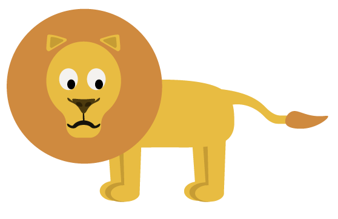

LØVE
Vægt: 120 - 250 kg.
Højde: 120 - 190 cm.
Levealder: 15 - 20 år.
Føde: Løven er et rovdyr. Foretrækker zebra, gnu og antilope
Levested: Afrika syd for Sahara
Sjove facts om løven
Løver kan løbe op til 80 kilometer i timen og springe op til 11 m i ét spring!
Et løvebrøl kan høres op til 8 km væk og er det højeste af alle kattedyrs
I løveflokken er det hunløverne der jager, og hanløverne der passer på flokken og deres territorie.
En hunløve har brug for ca. 5 kg kød pr. dag, og en hanløve skal bruge 7 kg eller mere.